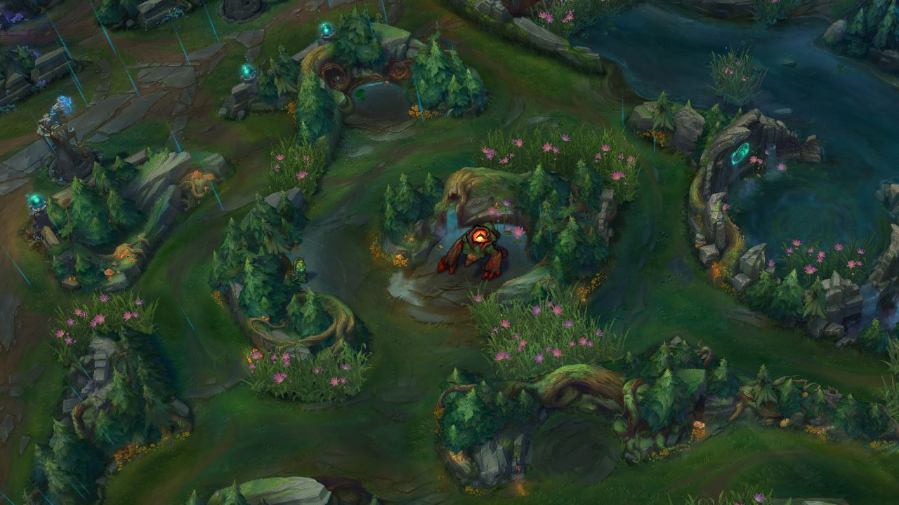
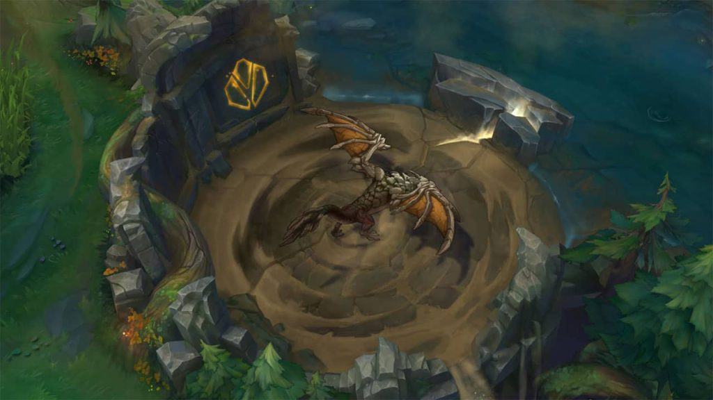
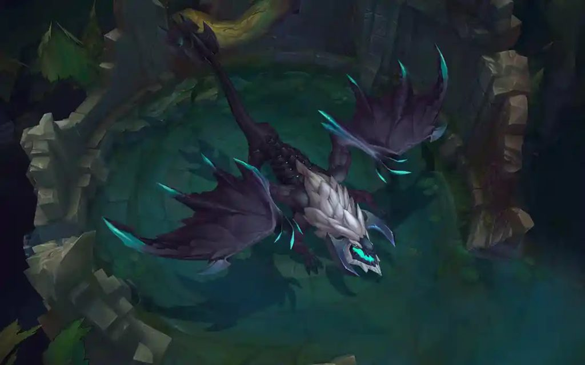

Dragões do Rift
Todos os dragões elementais no League Of Legends
- Dragão das Nuvens
-

- Efeito: Concede Velocidade de Movimento adicional baseado nos acúmulos do efeito;
Alma do Dragão: Atingir inimigos com habilidades ou ataques reduz o Tempo de Recarga
de suas habilidades-base;
Modificação de terreno: Cria correntes de ar no mapa que dão velocidade de movimento
quando os campeões estão sob elas. Além disso, também são criadas plantas de visão no decorrer do mapa;
- Mudanças do Terreno

- Dragão do oceano

Efeito: Concede regeneração adicional de Vida e Mana baseado nos acúmulos do efeito;
Alma do Dragão: A cada 3s, seu próximo ataque ou habilidade de dano cria uma pequena explosão em área,
causando Dano Adaptativo que escala com Dano de Ataque, Poder de Habilidade e Vida;
Modificação de terreno: Cria correntes de ar no mapa que dão velocidade de movimento
quando os campeões estão sob elas. Além disso, também são criadas plantas de visão no decorrer do mapa;
Mudanças do Terreno

Dragão Infernal

Efeito: Concede adicional de dano físico e Poder de Habilidade baseado nos acúmulos do efeito;
Alma do Dragão:A cada 3s, seu próximo ataque ou habilidade de dano cria uma pequena explosão em área,causando
Dano Adaptativo que escala com Dano de Ataque, Poder de Habilidade e Vida;
Modificação de terreno: Queima paredes e arbustos no jogo, deixando o mapa mais aberto. Também cria
pelo menos 10 Pinstouros no mapa.
quando os campeões estão sob elas. Além disso, também são criadas plantas de visão no decorrer do mapa;
Mudanças do Terreno

Dragão da Montanha

Efeito:Concede adicional de armadura e resistência mágica baseado nos acúmulos do efeito;
Alma do Dragão: Ao ficar sem sofrer dano por 5s, ganha um escudo que dura até ser destruído. A força do
escudo escala com Dano de Ataque, Poder de Habilidade e Vida adicionais.
Modificação de terreno:Cria formações rochosas que funcionam como paredes ao longo do mapa;
quando os campeões estão sob elas. Além disso, também são criadas plantas de visão no decorrer do mapa;
Mudanças do Terreno

Dragão Hextech

Efeito: Concede Velocidade de Ataque adicional baseado nos acúmulos do efeito;
Alma do Dragão:Causar dano com Ataques Básicos ou Habilidade cria um raio de choque
que causa Dano e Lentidão. Tempo de Recarga de 8s.
Modificação de terreno:Cria portais Hextech ao longo do mapa, que servem para levar campeões
de um ponto ao outro em poucos segundos;
Mudanças do Terreno

Dragão Quimtech

Efeito: Concede Tenacidade e um aumento de cura e Resistência do Escudo baseado nos acúmulos do efeito;
Alma do Dragão: Ao ficar com menos de 50% da sua Vida Máxima, recebe 11% tanto em aumento de Dano
quanto em redução de Dano Recebido.
Modificação de terreno:Modificação de terreno: Aprimora os efeitos dos Pinstouros, Frutoméis e Florividentes;
Mudanças do Terreno

Dragão Ancião

Efeito: Aplica dano verdadeiro em ataques e habilidades, além de abater alvos
com menos de 20% de vida pelo “Hálito do Dragão.”
Quanto tempo dura o Buff do Ancião?
O buff do Dragão Ancião dura 150 segundos.